User guide · v0.1.15 + PM
Yantra
What is where, and how to do the daily work — shown on real screens
Equipment · Tickets · Improvements · Lessons · Readings · Preventive maintenance · Contracts · Masters · Settings
Screens taken on a test copy with sample plant data. The screens show Yantra v0.1.15 with preventive maintenance, as of 02-11-2026.
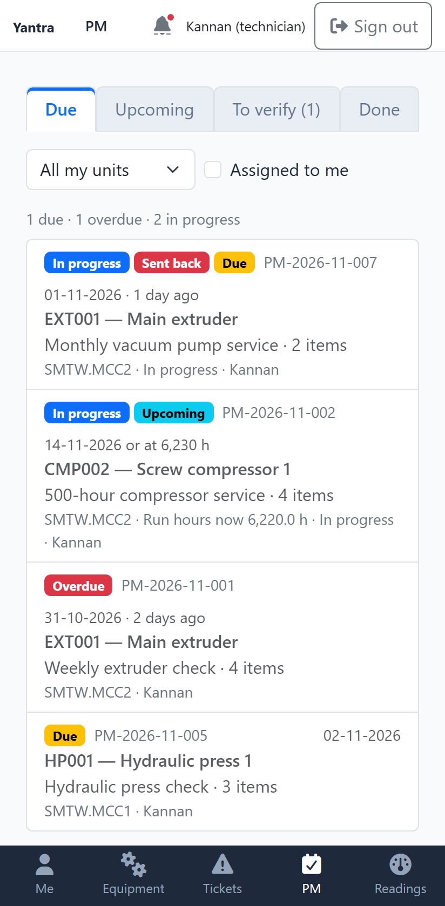
1 · Getting around
Who uses Yantra, and where
| Role | Device | Main work in Yantra |
|---|---|---|
| Operator | Phone | Raise a ticket at the machine (QR label), log meter readings, read one-point lessons |
| Supervisor | Phone | As the operator, for the units they look after |
| Technician | Phone | Work tickets to Back in service; do PM jobs item by item |
| Engineer | Desktop | Assign and close tickets; PM plans; verify, send back, reschedule or skip PM jobs; improvements |
| Manager | Desktop | Contracts with prices and documents; improvement register; all sites |
| IT admin, Admin | Desktop | Settings, QR labels, network; Admin also the Masters lists |
A person’s role is set per site in Masters › Team. The role decides which menus, buttons and machines they see.
1 · Getting around
Me › Open work
Technician · phone on the floor · /me
- The first screen after login: the PM jobs and Tickets given to you, most urgent first.
- Tap a row to open the job or the ticket.
- The bottom bar: Me, Equipment, Tickets, PM, Readings.
- The bell at the top opens your notifications.
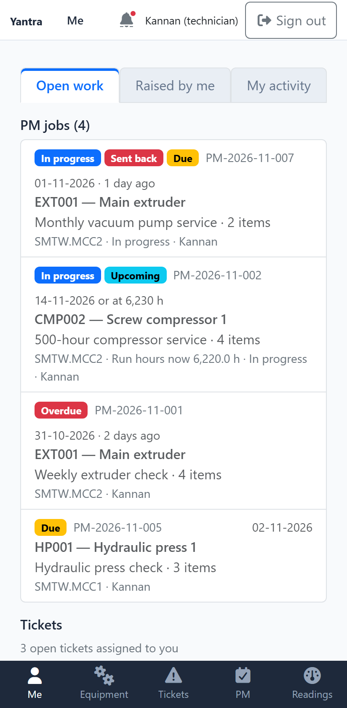
1 · Getting around
Me › Raised by me
Operator · phone · /me
- Tap Raised by me to see the tickets you raised.
- Each shows its state: Raised, Acknowledged, In progress, Back in service.
- My activity lists what you did.
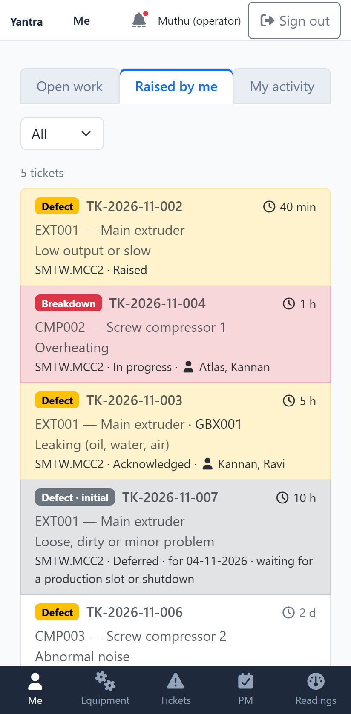
1 · Getting around
Me on the desktop
Engineer · office desktop · /me
- The menu is the dark bar on the left: the same items, plus Masters and Settings for those who may use them.
- Your open work shows here, e.g. a Countermeasure with Mark done.
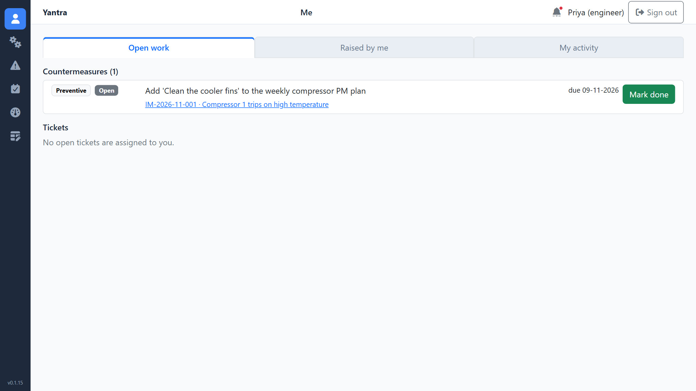
2 · Equipment
Equipment list
Engineer · desktop · /equipment
- Filter by site, unit, class, lifecycle, criticality, ticket status or contract.
- Tick rows, then Print labels.
- Print asset list prints a stock-check list.
- Add equipment adds a machine.
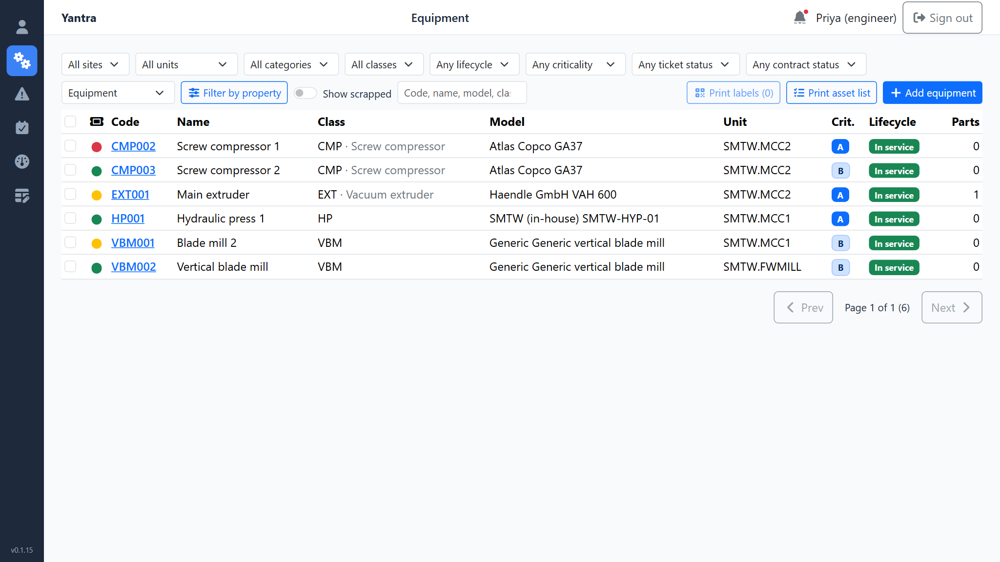
2 · Equipment
Find a machine
Anyone · desktop or phone
- Type in the search box, e.g. “compressor”. Words match the code, name, model, class or notes, in any order.
- The list keeps only the matches.
- Click the code (e.g. CMP002) to open the machine.
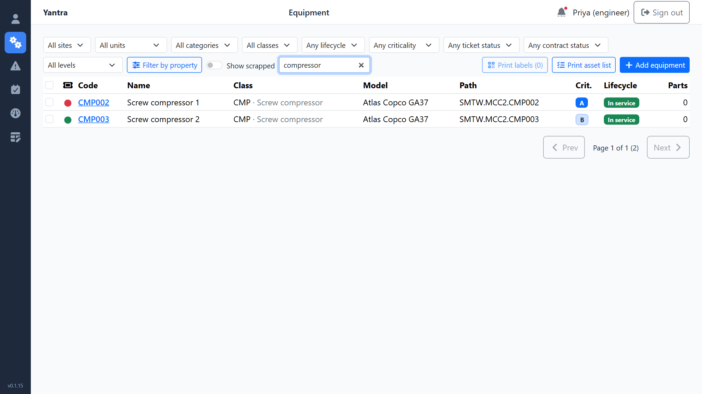
2 · Equipment
Equipment on the phone
Operator · phone · /equipment
- Type part of the code, name, model or class.
- Filters narrows the list.
- The dot shows open tickets: red = breakdown, yellow = defect, green = none.
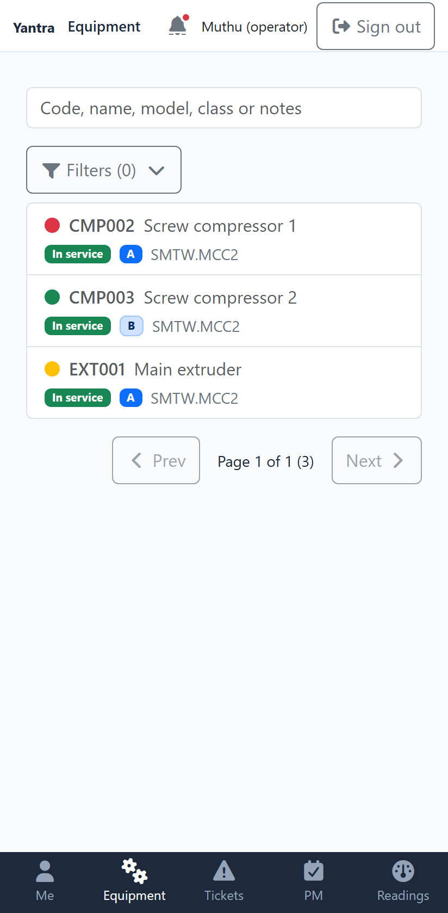
2 · Equipment
Scan a QR label
Anyone · phone, at the machine · /e/<code>
- Point the phone camera at the machine’s QR label.
- Yantra opens that machine’s page at once.
- Tap Raise ticket to report a problem on it.
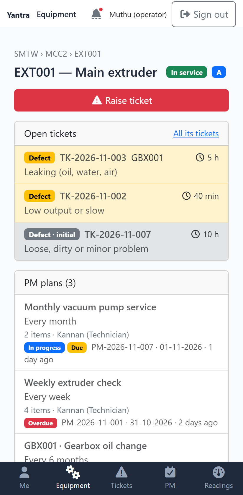
2 · Equipment
A machine’s page
Operator · phone · /equipment/<id>
- Top: code, name, In service, criticality (A, B, C).
- The big red Raise ticket button.
- Cards: Open tickets, PM plans, Documents, Photos, Details, then Meters and History.
Left: top of the page. Right: further down.
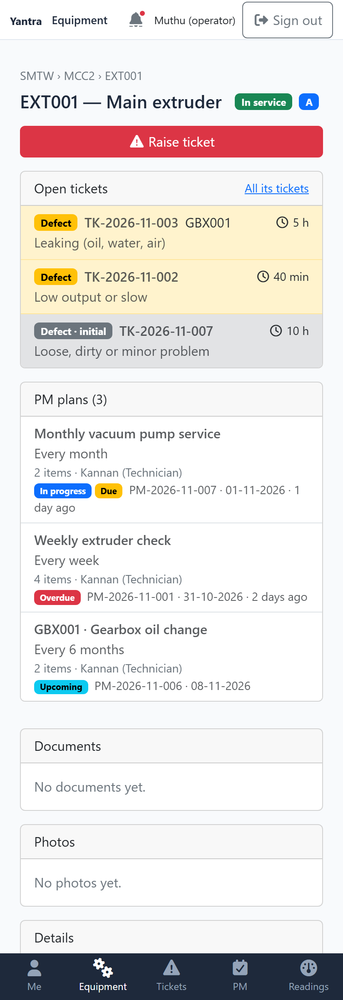
2 · Equipment
A machine’s page, whole
Engineer · desktop · Main extruder
- Buttons: Raise ticket, Edit, Add part, Move, Change lifecycle, Print label.
- Cards: Lessons, Under contract, Open tickets, PM plans, Details, Properties, Parts, Meters, History, Documents, Photos.
- Each card has its own add button, e.g. Add PM plan, Log reading.
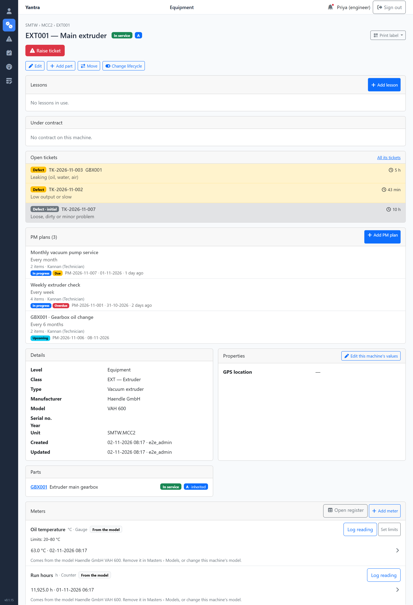
2 · Equipment
A part of a machine
Engineer · desktop · GBX001 Extruder main gearbox
- The path at the top (SMTW › MCC2 › EXT001 › GBX001) shows which machine it belongs to.
- A part has its own tickets, meters and PM plans, here Gearbox oil change.
- Add one with Add part on the machine’s page.
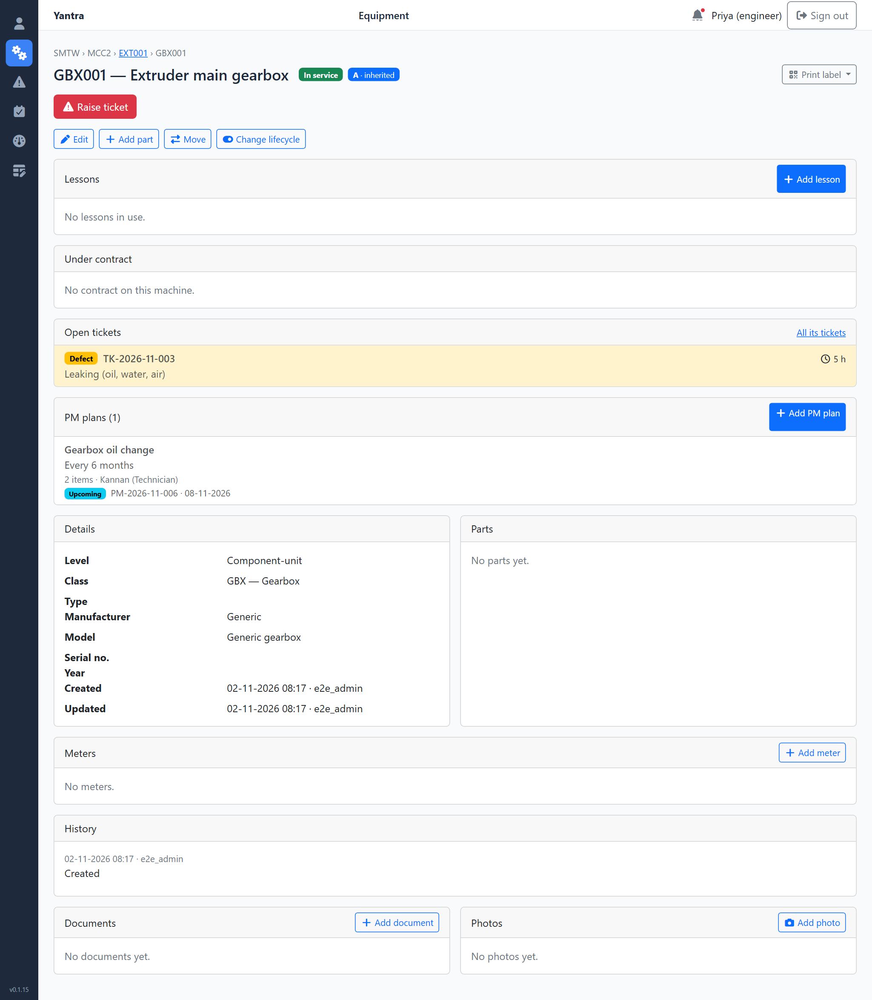
2 · Equipment
Print QR labels
Engineer or IT admin · desktop · /labels
- On the Equipment list, tick the machines and click Print labels.
- This page opens in a new tab. Click Print.
- Print at 100 % (“Actual size”) on plain A4. Check one square with a ruler.
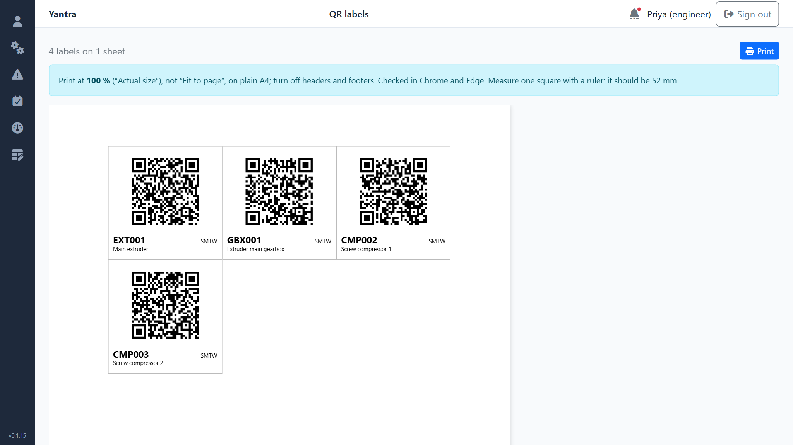
2 · Equipment
Asset list for a stock check
Engineer or manager · desktop · /asset-list
- Click Print asset list on the Equipment list.
- One table per unit. Include parts and Checklist columns change what is printed.
- Click Print.
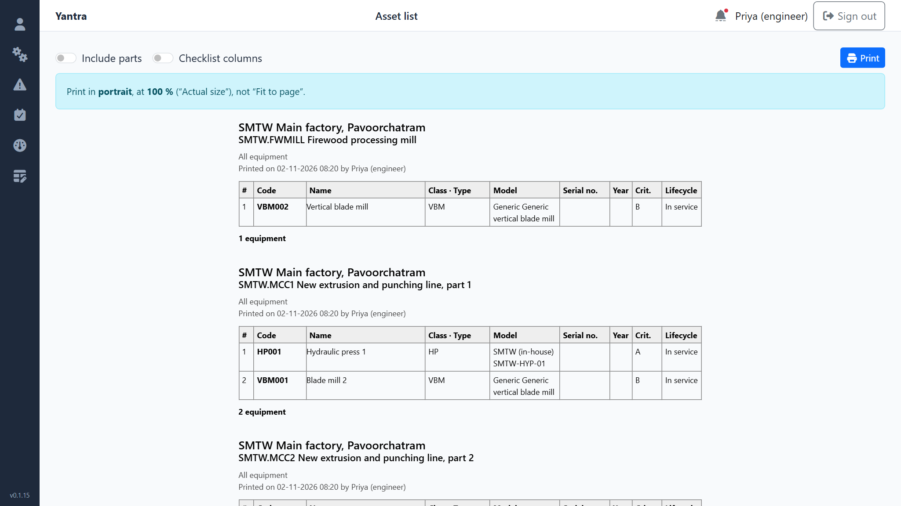
3 · Tickets
Raise ticket: pick the machine
Operator · phone · /tickets/new
- Tap Tickets, then Raise ticket.
- Type part of the name, e.g. “compressor”, and tap the machine.
- Quicker: scan the machine’s QR label and tap Raise ticket there.
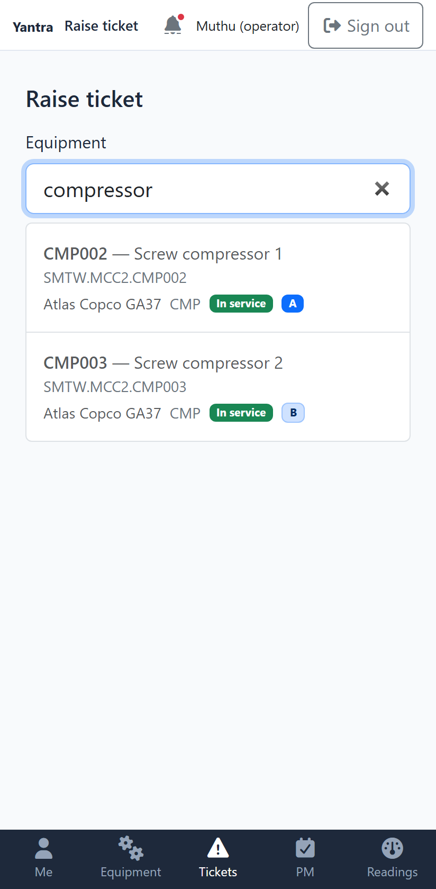
3 · Tickets
Raise ticket: describe it
Operator · phone
- Under How bad is it? tap Stopped (breakdown), Running, reduced or Early signs.
- Pick the symptom if you know it. Write What is wrong?
- Check When did it happen?
- Fixed it yourself? Tick Already fixed — back in service.
- Tap Save ticket.
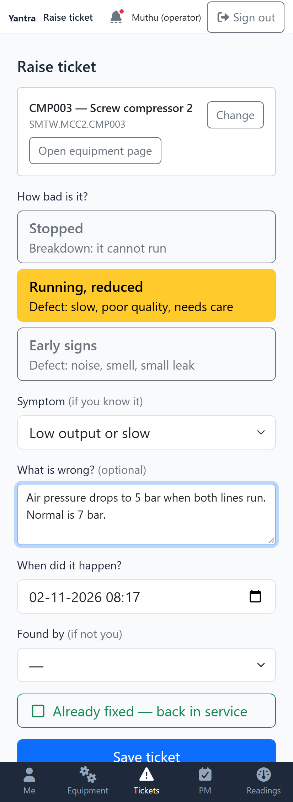
3 · Tickets
Tickets on the phone
Technician · phone · /tickets
- Red rows are breakdowns, yellow rows are defects.
- The clock shows how long the ticket is open.
- Filters: Open, Breakdowns and defects, site, unit, Assigned to me.
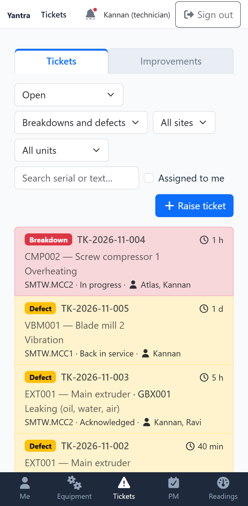
3 · Tickets
Tickets list
Engineer · desktop · /tickets
- The same list and filters as on the phone, plus a search box.
- Overdue since … marks a ticket on hold past its planned date.
- Raise ticket is at the right. The Improvements tab is next to Tickets.
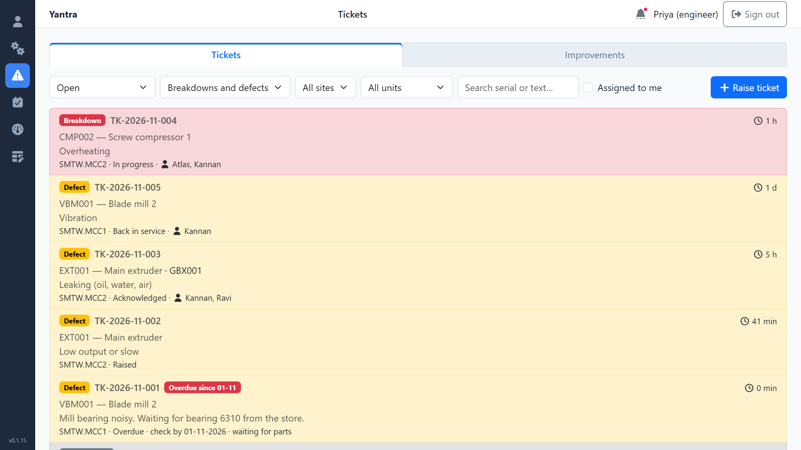
3 · Tickets
Work a ticket
Technician · phone · a breakdown in progress
- The next step is the big blue button, here Back in service.
- Also: Add note, Change severity, Put on hold.
- The contract line shows the machine is under AMC.
- Cards: Details, Times, Assigned, then Timeline.
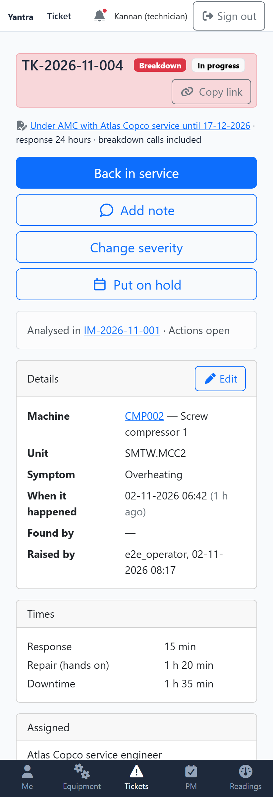
3 · Tickets
Back in service
Technician · phone · dialog
- Tap Back in service when the machine runs again.
- Check Back in service at, or keep Now.
- Under Who did the work? tap the person.
- Tap Back in service to save.
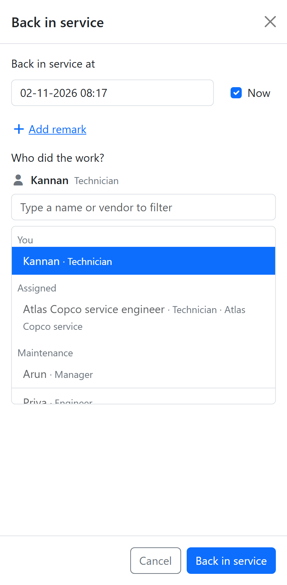
3 · Tickets
A ticket waiting to be closed
Engineer · desktop · back in service
- Close it, or Send back when it is not fixed.
- Also: Add note, Start improvement, Not fixed — raise again.
- Before closing, fill Labour (Add labour) and Parts used (Add part).
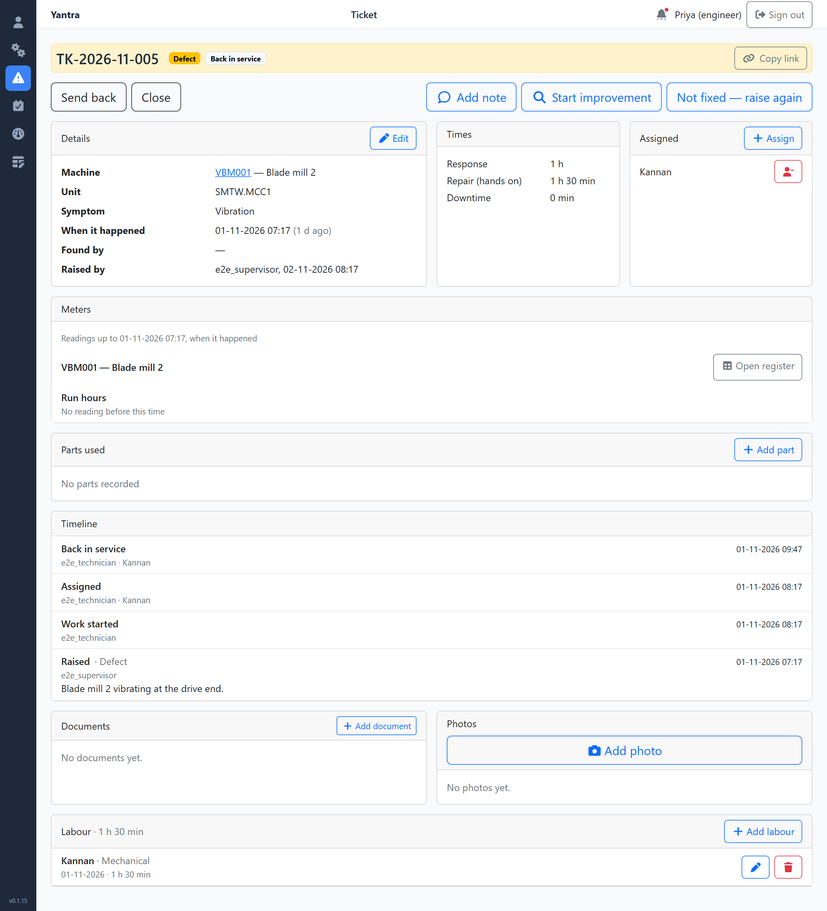
3 · Tickets
Close a ticket
Engineer · desktop · dialog
- Click Close. Check the Symptom; choose the Cause and the Action taken.
- Labour must be entered first. Parts fitted? Cancel and add them on the ticket first.
- Click Close ticket. The ticket becomes read-only.
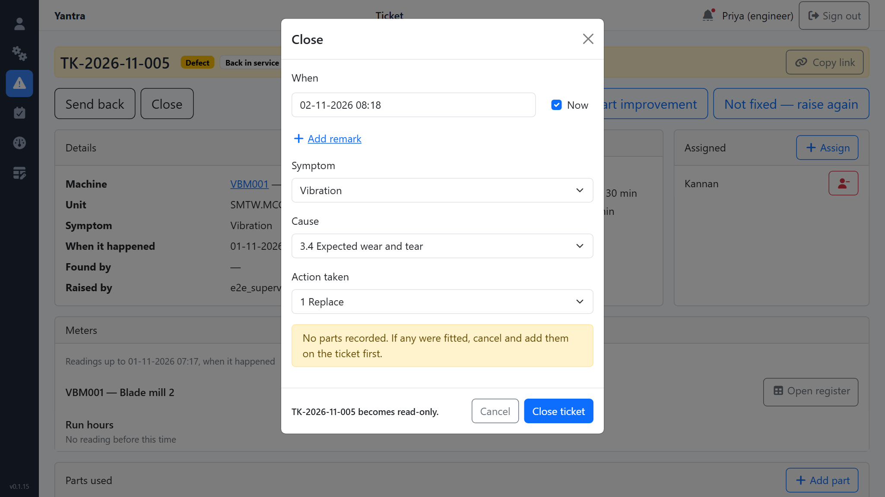
3 · Tickets
Assign a ticket
Engineer or supervisor · desktop · dialog
- On a ticket, click Assign in the Assigned card.
- Type a name or vendor to filter, then click the person.
- Click Assign. The person gets a notification.
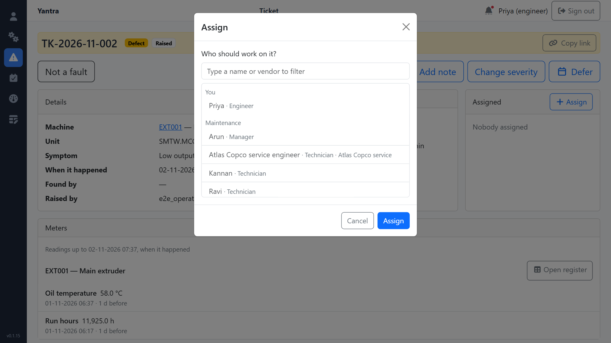
3 · Tickets
A ticket on hold
Engineer · desktop
- Put on hold when the work must wait, e.g. for a part or a shutdown.
- The ticket shows Deferred, its planned date and the reason.
- Next: Start work, Fixed, or Change plan to move the date.
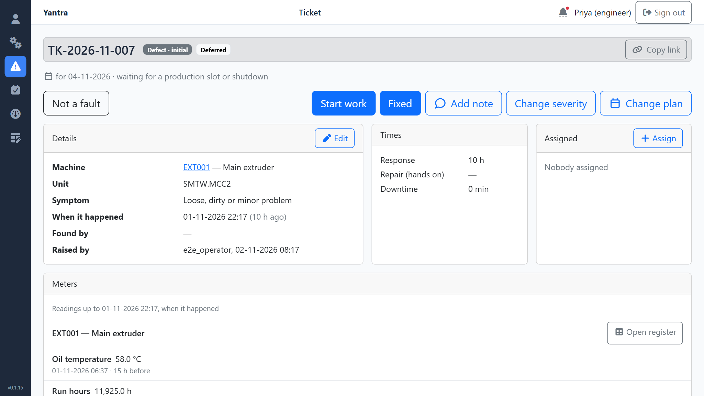
4 · Improvements
Start an improvement
Engineer · desktop · dialog
- On a ticket that keeps coming back, click Start improvement.
- Fill Title and Problem, and choose the Lead.
- Click Start improvement.
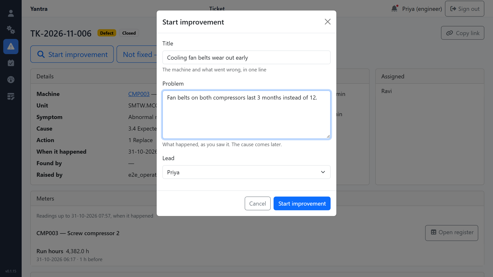
4 · Improvements
Improvements list
Engineer or manager · desktop · /tickets/improvements
- Tickets › Improvements tab.
- Filters: Open improvements, All units.
- Print register opens the register for the management review.
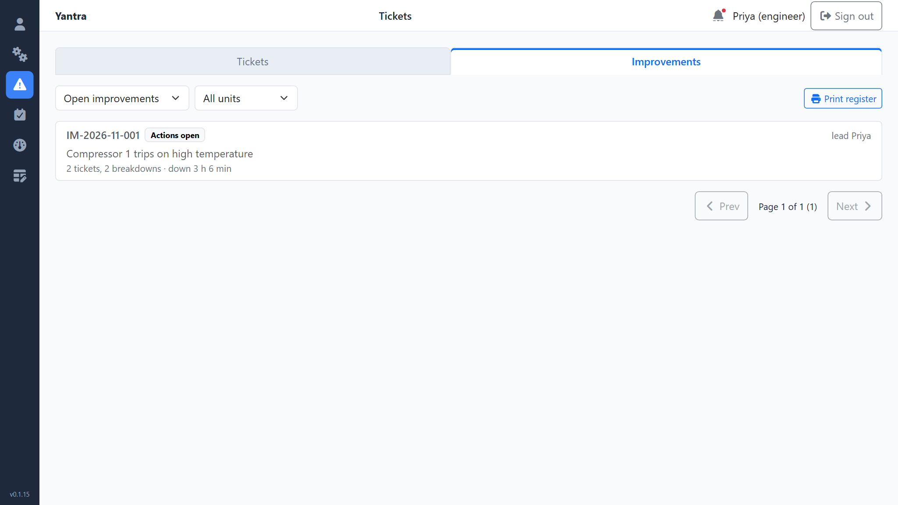
4 · Improvements
An improvement
Engineer · desktop · whole page
- The problem and its Tickets (Add ticket).
- Why-why: click Add why until the answer is something the plant can change. Then Edit root cause.
- Add countermeasure, each with a kind, owner and due date. The owner clicks Mark done.
- The Timeline keeps every change.
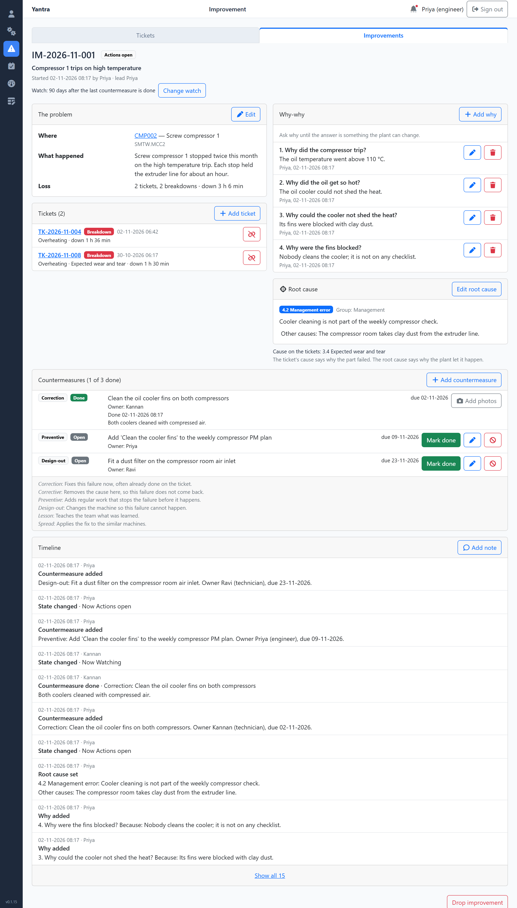
4 · Improvements
Improvement register
Manager · desktop · /tickets/improvements/register
- Choose the period: From, To.
- The register counts improvements by state and lists each one.
- Click Print.
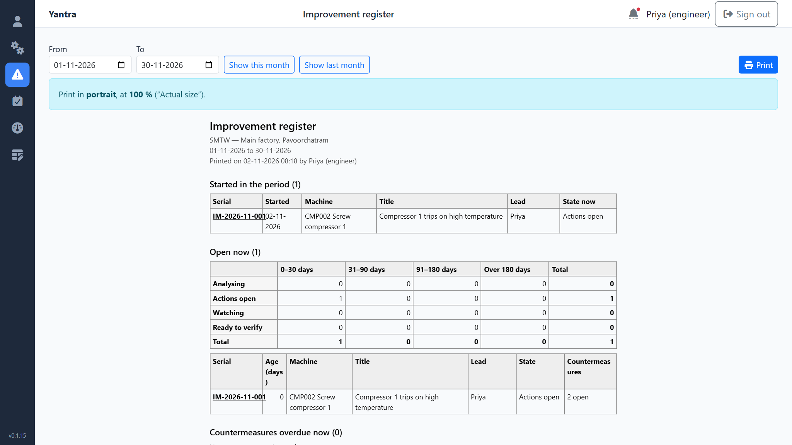
5 · One-point lessons
Read a one-point lesson
Operator · phone, at the machine
- Open the machine and tap the lesson in the Lessons card.
- Read the photo and the steps.
- “for every Compressor”: the lesson shows on every machine of that class.
- Print lesson prints it to hang at the machine.
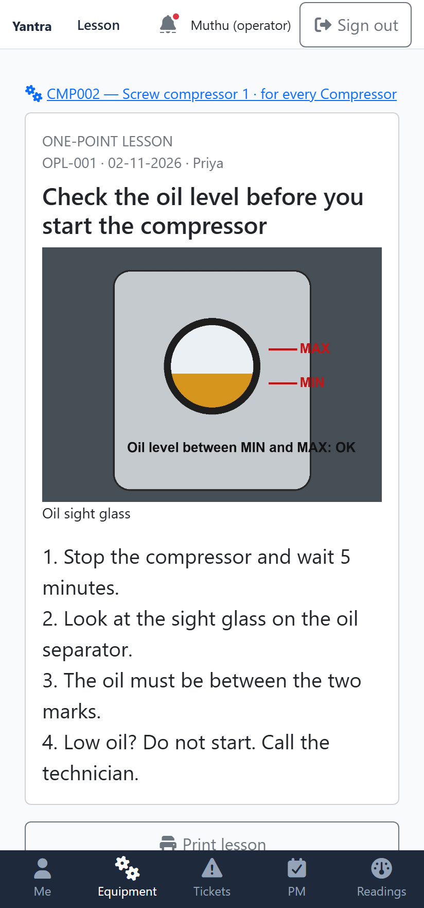
5 · One-point lessons
Write a lesson
Engineer · desktop
- On the machine’s page, click Add lesson in the Lessons card.
- Write the steps and add a photo.
- Tick the class to show it on every machine of that class.
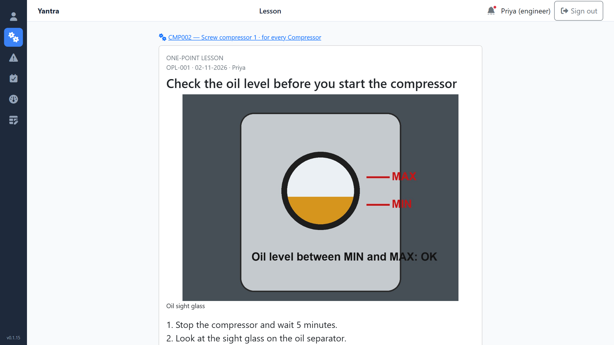
6 · Meter readings
Readings sheet
Operator · phone, end of shift · /readings
- Tap Readings. Each machine of your units with its meters; the last reading is under the name.
- Type each value.
- Keep Now ticked, or untick it and set the Time of reading.
- Tap Save readings.
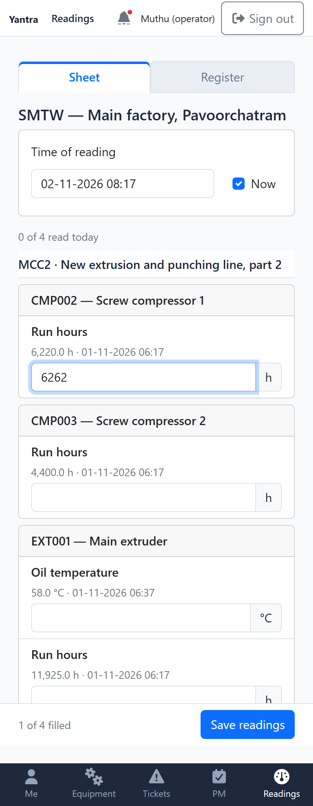
6 · Meter readings
Log one reading
Operator · phone · dialog
- On a machine’s page, tap Log reading beside a meter.
- Type the Value.
- Tick Meter reset only when the meter was replaced or set back to zero.
- Tap Save.
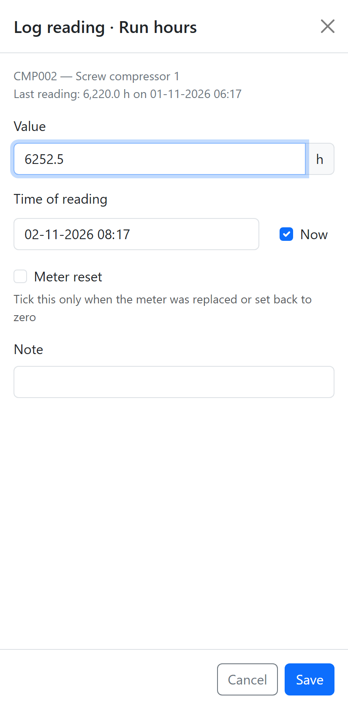
6 · Meter readings
Readings register
Engineer · desktop · /readings?tab=register
- On a machine’s page click Open register, or pick a machine on the Register tab.
- All readings of the machine, newest first.
- Meters: All picks one meter.
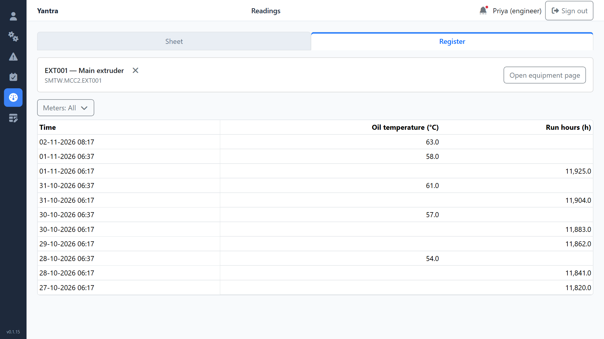
7 · Preventive maintenance
A PM plan
Engineer · desktop · /equipment/pm/<id>
- On the machine’s page click Add PM plan, or a plan’s name to change it.
- Plan: Title, Done by, Assign jobs to, An engineer verifies each job.
- When is it due? By calendar: every … and/or By meter: every …; Last done.
- Items on the right: Add item; the arrows change the order. Click Save plan.
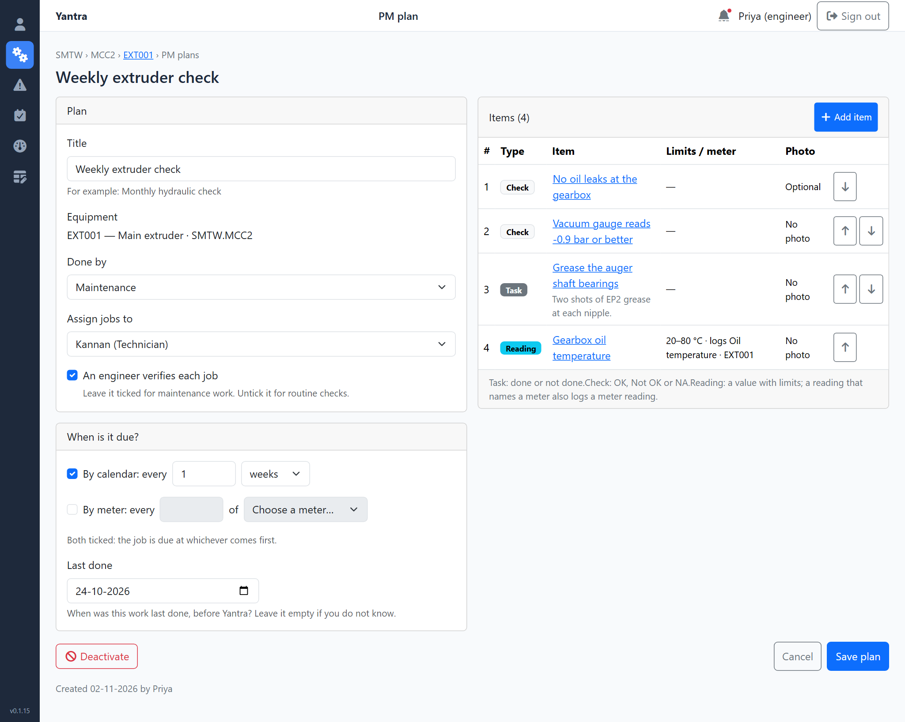
7 · Preventive maintenance
Add an item to a plan
Engineer · desktop · dialog
- Click Add item. Choose Task, Check or Reading.
- Write What to do or check; add Help text if useful; choose Photo.
- A reading can log a meter and has Min and Max.
- Click Save item.
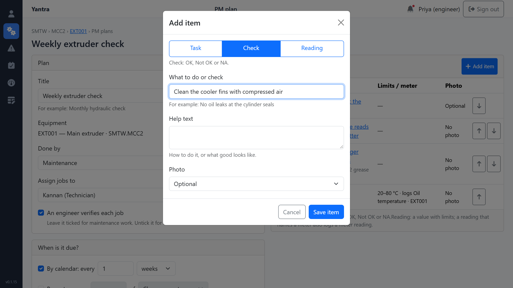
7 · Preventive maintenance
A new plan
Engineer · desktop · Screw compressor 2
- Fill the title.
- Tick the trigger: calendar, meter or both.
- Add at least one item.
- Click Save plan. The first job comes when the plan falls due.
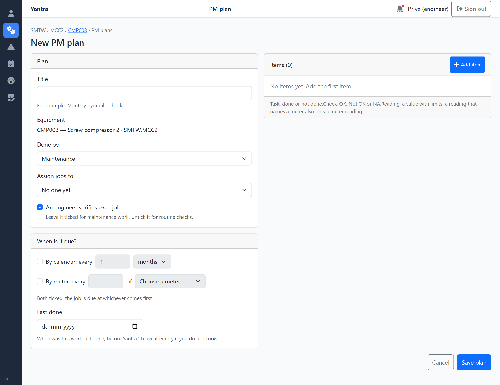
7 · Preventive maintenance
PM jobs on the phone
Technician · phone · /pm
- Tap PM. Tabs: Due, Upcoming, To verify, Done.
- Badges: Overdue, Due, In progress, Sent back.
- Assigned to me shows only your jobs.
- Tap a job to open it.
7 · Preventive maintenance
Start a PM job
Technician · phone · /pm/jobs/<id>
- Check Performed by and Started (keep Now).
- Tap Start job.
- Before that the items are only shown, not filled.
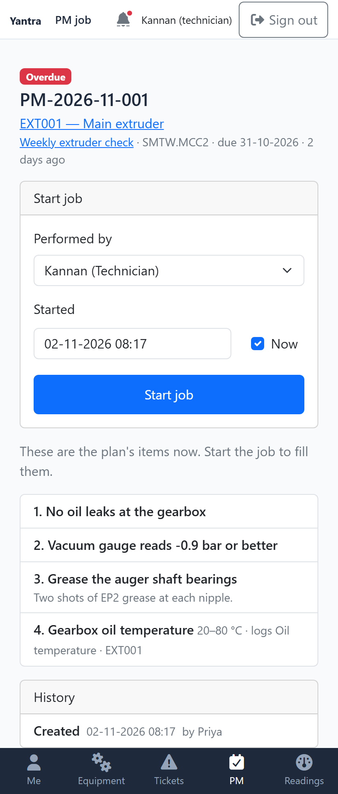
7 · Preventive maintenance
Fill the items
Technician · phone
- For a check tap OK, Not OK or NA.
- For a task tap Done or Not done.
- Not OK asks What is wrong? Type it and tap Save.
- Each answer is saved at once (“Saved”).
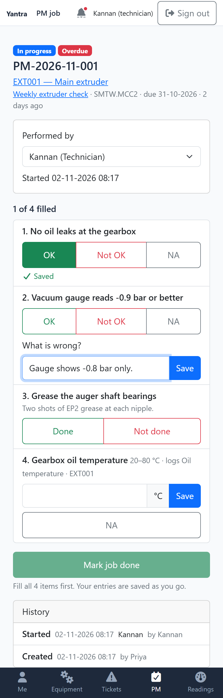
7 · Preventive maintenance
All items filled
Technician · phone
- For a reading, type the value and tap Save.
- A reading tied to a meter is also logged as a meter reading.
- When it says “4 of 4 filled”, tap Mark job done.
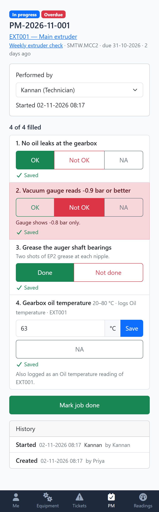
7 · Preventive maintenance
Mark job done
Technician · phone · dialog
- Check the Done time, or keep Now.
- After this you cannot change the job, unless an engineer sends it back.
- Tap Mark job done.
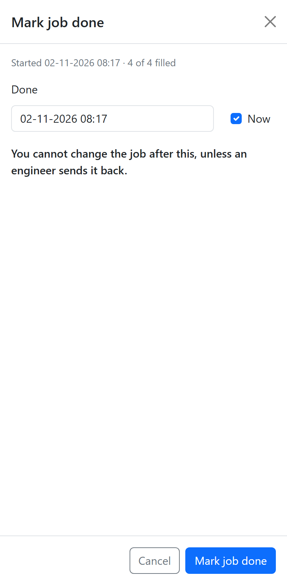
7 · Preventive maintenance
A job sent back
Technician · phone
- The Sent back badge and the engineer’s remark in the yellow box, e.g. “Belt is still loose…”.
- Do the work again and change the answers.
- Tap Mark job done.
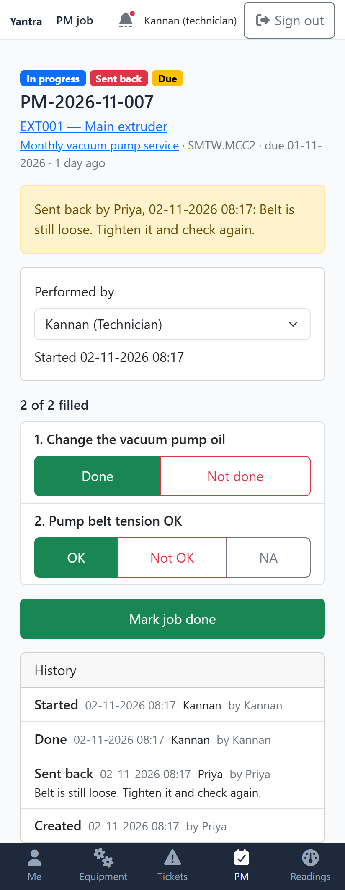
7 · Preventive maintenance
PM › Due
Engineer · desktop · /pm
- All due, overdue and started jobs.
- Filters: All my units and Assigned to me.
- A job turns Overdue after its on-time window.
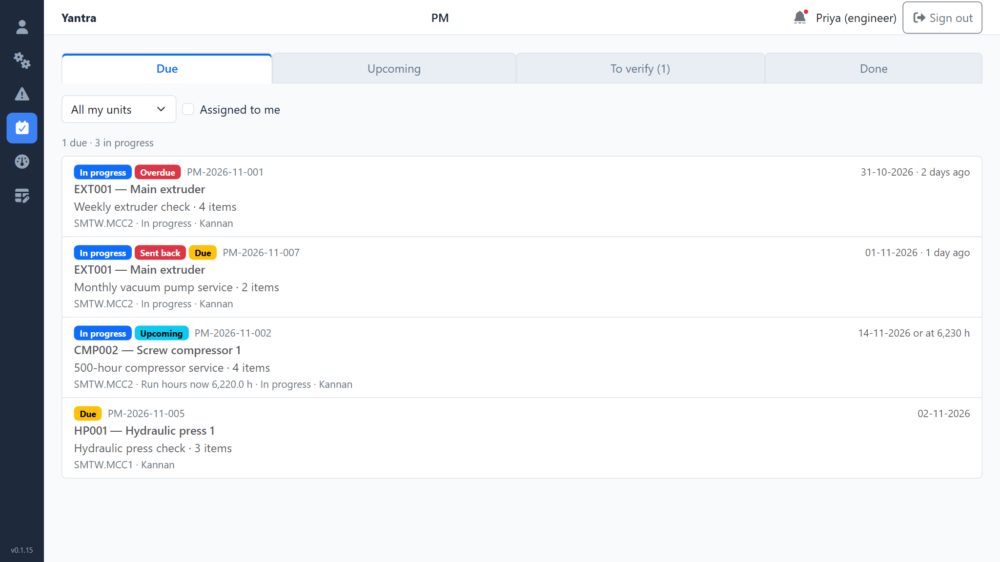
7 · Preventive maintenance
PM › Upcoming
Engineer · desktop · /pm?tab=upcoming
- Jobs coming due soon, here the gearbox oil change.
- Use it to plan parts and a stop of the machine.
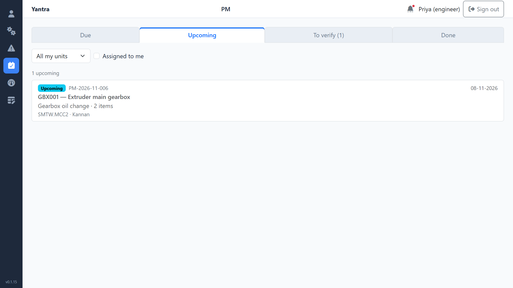
7 · Preventive maintenance
PM › To verify
Engineer · desktop · /pm?tab=to_verify
- Finished jobs waiting for an engineer.
- “1 Not OK” warns that a check failed.
- Click a job to read it and verify it.
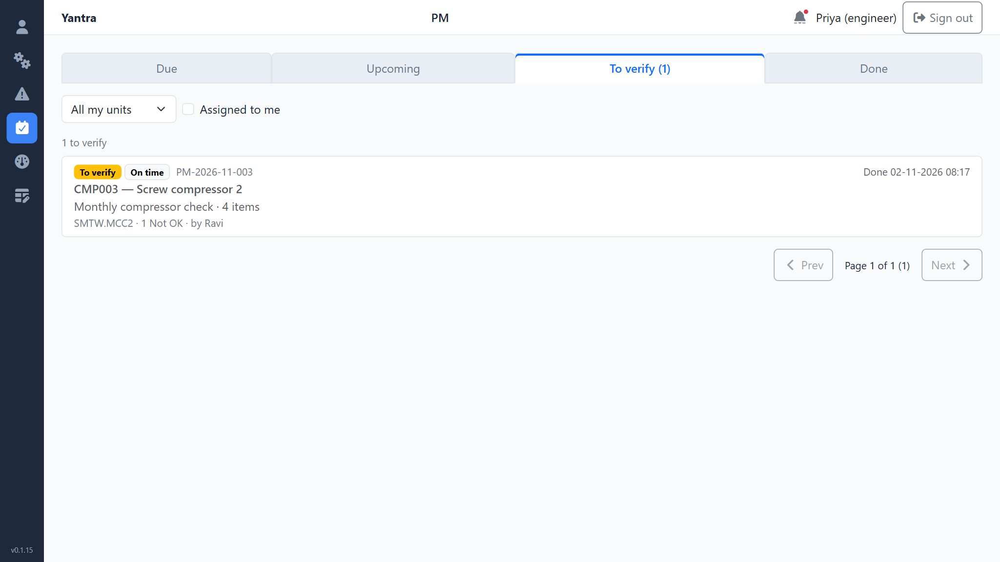
7 · Preventive maintenance
PM › Done
Engineer · desktop · /pm?tab=done
- Closed jobs: Verified, On time or late, Skipped.
- On time means done within the job’s window around its due date.
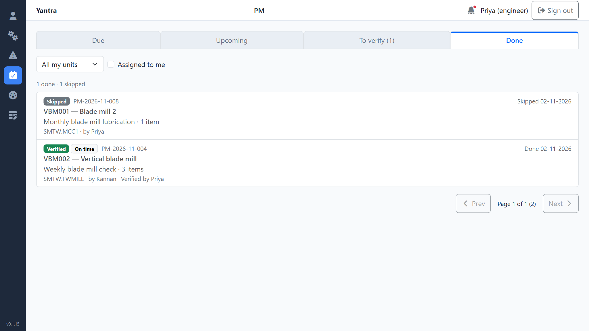
7 · Preventive maintenance
Check a finished job
Engineer · desktop · /pm/jobs/<id>
- Read each result. Not OK rows are red.
- Then click Verify job or Send back.
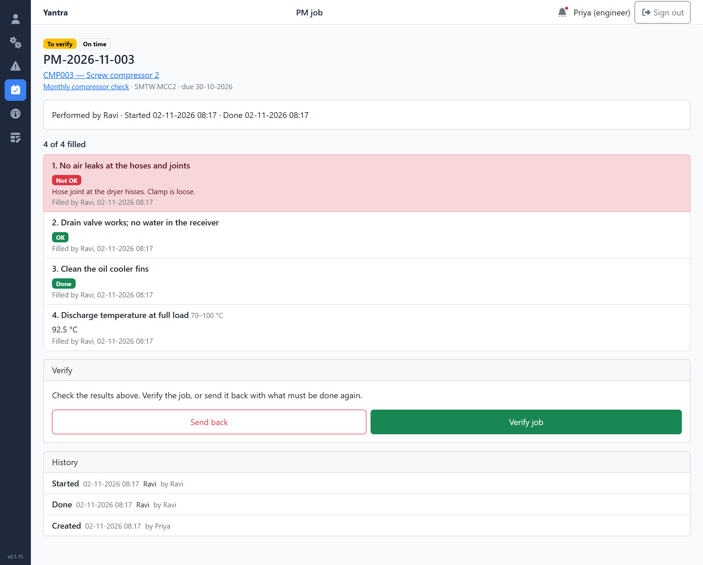
7 · Preventive maintenance
Verify job
Engineer · desktop · dialog
- Add a Remark (optional).
- Click Verify job.
- The job closes. It cannot be changed or sent back after this.
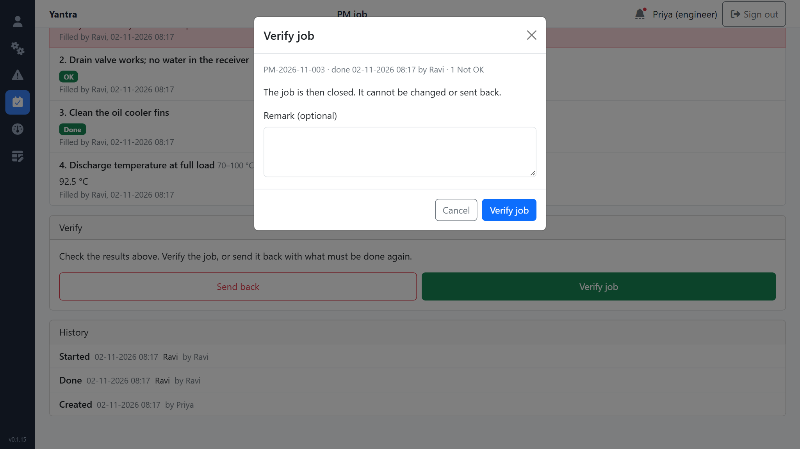
7 · Preventive maintenance
Send back job
Engineer · desktop · dialog
- Write What must be done again?
- Click Send back job.
- The job goes back to In progress, and the technician sees your remark.
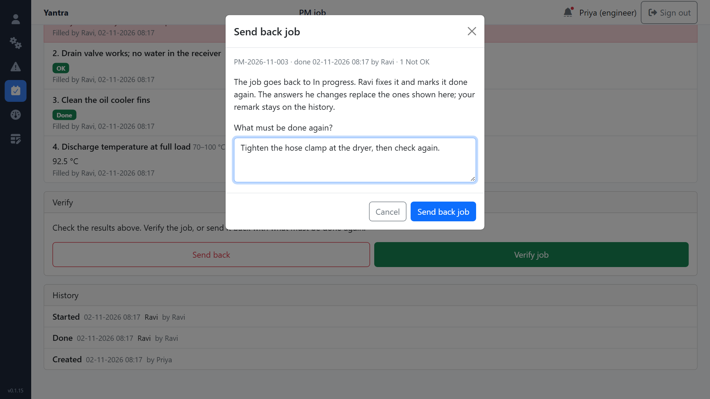
7 · Preventive maintenance
Reschedule a job
Engineer · desktop · dialog
- On a due job, card Reschedule or skip, click Reschedule job.
- Set the New due date.
- Write Why is the job moved?
- Click Reschedule job.
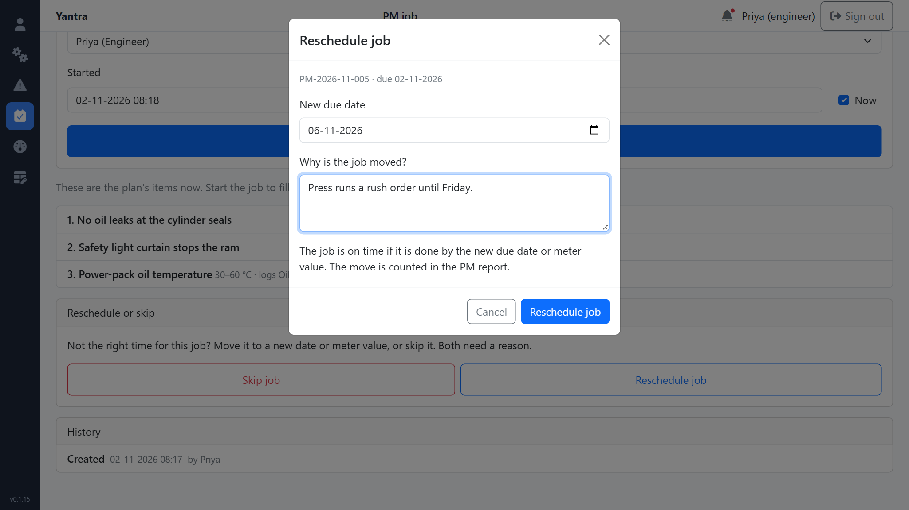
7 · Preventive maintenance
Skip a job
Engineer · desktop · dialog
- Click Skip job.
- Write Why is the job skipped?
- Click Skip job. You cannot undo this.
- The job counts as not done; the next job counts from today.
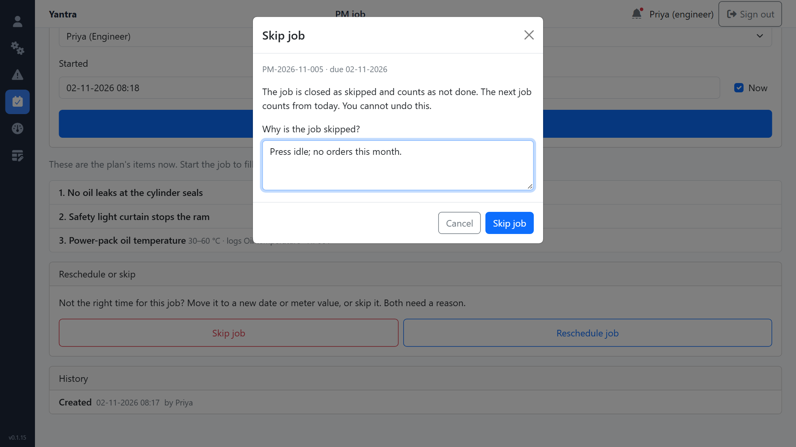
7 · Preventive maintenance
A verified job
Anyone with PM access · desktop
- Who did it, and when.
- Verified by, with the remark.
- History at the bottom lists every step of the job.
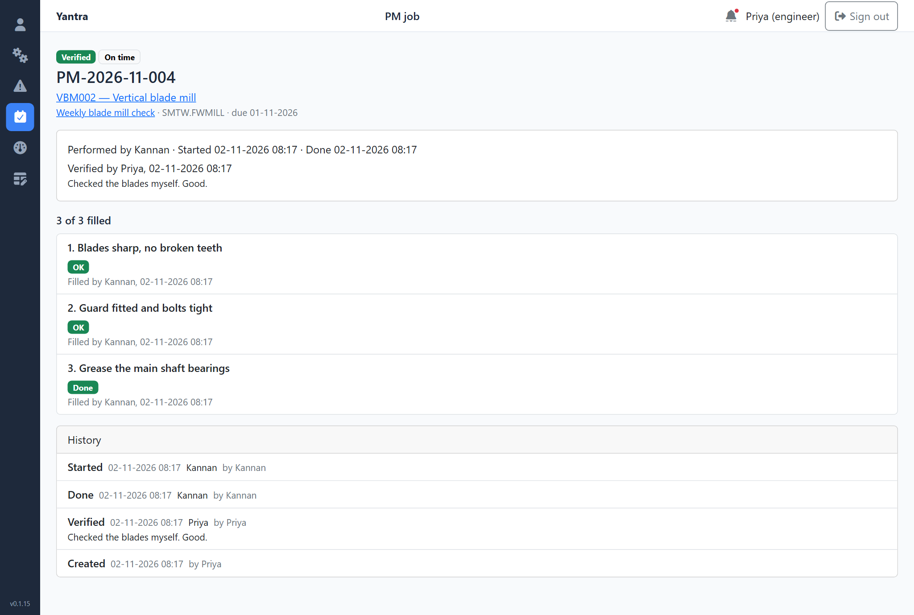
7 · Preventive maintenance
A skipped job
Anyone with PM access · desktop
- The Skipped badge, the reason, and who skipped it.
- The next job of the plan counts from the skip.
8 · Contracts
A contract
Manager · desktop · /contracts/<id>
- Terms: vendor, period, covered and not covered, response time, call-out number, cost note.
- Machines covered: Add machine, Edit price, Remove.
- Breakdown calls: tickets the vendor’s engineer worked on, “N of 4 calls used”.
- Renew contract at the top right.
Only managers see the price, the cost note and the documents.
8 · Contracts
Under contract, on the machine
Anyone · machine page
- The Under contract card shows the vendor, the end date (Ends in 45 days), what is covered and the Call-out number.
- Open contract opens it.
8 · Contracts
All contracts
Manager or admin · desktop · Masters › Contracts
- Every contract, with filters.
- Add contract starts a new one.
- Click a contract to open it.
9 · Masters · onboarding equipment
How the masters fit together
Where it is: the place tree
Site · SMTW, BRICKS, SSVT
Unit · SMTW.MCC2, SMTW.KILN
Equipment · EXT001 Main extruder
Parts (component-units, components) · GBX001 gearbox
What it is: the kind
Category (optional) · Lifting equipment
Class · EXT Extruder → Type · Vacuum extruder
Model = Manufacturer + designation · Haendle VAH 600
The machine picks one model; class and type come from it
9 · Masters · onboarding equipment
Sites and units: the places
Site
A factory, yard or farm: SMTW, BRICKS, SSVT, the farms.
People get their role per site in Team.
Unit
An area or line in a site, coded SITE.UNIT: SMTW.MCC2, SMTW.KILN, BRICKS.FILTER.
Only a machine has a unit. Its parts go where it goes.
Rules
Made by IT admin.
A code is frozen once anything uses it. Check the code before the first machine.
Never deleted: set inactive.
9 · Masters · onboarding equipment
Category, class, type: what a machine is
Class
The kind of machine: Extruder, Compressor, Hydraulic press.
Its code starts every machine code: class EXT → EXT001, EXT002.
One class at any level: a blower is a blower, machine or part.
Type
How machines of a class are built: Screw compressor, Vacuum extruder.
Optional. A type belongs to one class.
Category
A group of classes: Lifting equipment, Utilities, Power tools.
Optional, a name only. Used for filters and reports.
Made by an engineer or IT admin. Add a class only for a new kind of machine, not for a new maker. A class code is frozen once a machine uses it.
9 · Masters · onboarding
Manufacturer and model
- A model is a maker’s product: manufacturer + designation, e.g. Atlas Copco GA37.
- It belongs to one class (and a type) for life.
- Every machine picks a model. Its class and type come from the model: there is no class picker on the machine.
- Set things up once on the model: its meters, property values and documents apply to every machine of that model.
- Two machines of the same model share one model record.
9 · Masters · onboarding equipment
No maker’s model? Generic or in-house
Maker unknown → Generic
Manufacturer Generic, model named by what it is: “Generic gearbox”, “Generic bore pump”.
One Generic model per class is enough.
When you find the nameplate later, give the machine the real model.
Built here → in-house
Manufacturer SMTW (in-house), model e.g. SMTW-HYP-01.
The design drawings go on this model.
A part with no model
A component-unit (a drive, a power pack) may have no model.
Then pick its class (and type) directly.
A machine always needs a model.
Why not leave it blank? “Generic” says the maker is not known. A blank cannot tell that from “nobody looked”. Reports by model leave Generic out.
9 · Masters · onboarding
Parts of a machine
- Add a part with Add part on the machine’s page: a component-unit (drive, power pack) or a component (motor, gearbox).
- Make a part only when tickets or PM point at it: the gearbox oil change, a press’s safety door.
- A part gets its own code (GBX001) and can have its own meters and PM plans.
- It has no unit: it follows its machine. Criticality comes from the machine unless you grade it.
- The code never changes, also when the part moves to another machine.
9 · Masters · onboarding equipment
Documents and photos: where each goes
| What | Put it on | Why |
|---|---|---|
| Maker’s manual, drawings, parts list | The model (Masters › Models) | Uploaded once; shows on every machine of that model, at every site |
| Design drawings of an in-house press | The in-house model | The same design for each press built to it |
| Nameplate photo, drawing of a change to one machine | The machine | True of this machine only |
| Photo of the machine in place | The machine (Photos card) | Helps find it on the floor |
- Documents are PDF. Photos are JPEG, PNG or WebP. The size limit is in Settings › Uploads (20 MB at the start).
- To replace a file, remove the old one and add the new one. A removed file is kept; a manager or IT admin can restore or erase it.
9 · Masters · onboarding equipment
Checklist: one new machine
- Its site and unit exist. If not, ask IT admin.
- Its class exists. If it is a new kind of machine, add the class with a short code.
- Its manufacturer exists. If not, add it.
- Its model exists. If not, add it, or use the class’s Generic model.
- On the model: meters, property values, the maker’s documents.
- Equipment › Add equipment: unit, model, name, criticality (A, B, C), serial number, year.
- Add the parts that tickets or PM will point at.
- This machine’s own values: properties that differ, its own meters, the nameplate photo.
- Print label, stick it on the machine, scan it once to check.
Masters: where the plant is set up
Sites: the plant’s sites. Add site.
Units: areas or lines in a site (SMTW.MCC1 …).
Classes: kinds of equipment; the code starts each machine code.
Models: maker and model; its meters pass to each machine.
Masters: the lists the work uses
Meter types: run hours, oil temperature …
Failure codes: modes, causes, actions (ISO 14224).
Trades: labour is booked per trade.
Vendors: outside firms such as the AMC vendor.
9 · Masters
Team
Admin · desktop · Masters › Team
- Every person: employment (Direct, Contractor), trades, login, Sites and roles.
- A person’s role at each site decides what they see and may do.
- Add person adds one. Link a vendor’s engineer as a contractor.
10 · Notifications and settings
My notifications
Anyone · phone · /notifications
- Open it from the bell at the top.
- This device: turn on notifications for this phone.
- Also My devices, Email and What you will get.
The test browser blocks notifications, so this screen says “Notifications are blocked”.
10 · Notifications and settings
Notifications on the desktop
Manager · desktop
- Shows the email address from the login, and Send test email.
- The list of alerts a manager gets.
10 · Notifications and settings
Settings
Admin · desktop · /settings
- Database status, Uploads, Labels (label link address), Network (plant network ranges).
- Notifications: escalation minutes per criticality.
- Background tasks and Access log.
- Each section has its own Save.
On the test copy no worker runs, so the tasks show as overdue.
10 · Notifications and settings
Settings as IT admin
IT admin · desktop
- The same page.
- IT admin looks after uploads, labels and the network.
- IT admin works only from inside the plant network.
About these screens
- Taken on a test copy with sample data: made-up people, machines from the plant facts.
- History lines show test logins such as e2e_operator. Real use shows the person’s name.
- Notifications are blocked in the test browser, and no background worker runs, so those two screens look different in real use.
- The access log is empty on the test copy.
- The screens show Yantra v0.1.15 with preventive maintenance, as of 02-11-2026.